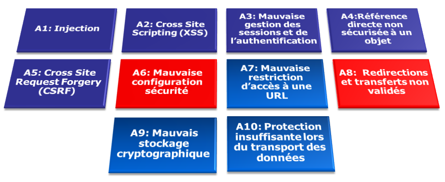

Sécurité
des applications Web
--
présentation des principales vulnérabilités
Les vulnérabilités
sont issues de faiblesses d'implémentation
à différents niveaux
- choix d'architecture (infrastructure ou logicielle)
- non implémentation d'un DMZ et donc exposition de serveurs sensibles
- configuration des serveurs (OS, applicatif)
- système non patché, installation par défaut avec des droits trop permissifs
-
développement logiciel
- ce qui nous intéresse, détail à suivre...
Les conséquences
de l'exploitation des vulnérabilités
L'exploitation d'une faiblesse de développement, de configuration, d'infrastructure, peut mener à :
- Une fuite de données
- notamment personnelles comme les mots de passe, qui font régulièrement les choux gras de la presse spécialisée
- Une atteinte à l'image
- le défaçage (defacing), la reprise sur les réseaux sociaux de failles de sécurité, avérées ou non
- Une interruption de service
- attaque ciblée par déni de service, blocage de comptes utilisateurs suite à attaque par brute force
Référencement des vulnérabilités
Know you enemy
Le choix d'un référentiel permet de partager une vision commune sur les risques et les moyens de protection associés.
Ce choix s'est porté naturellement sur l'OWASP
OWASP
- Open Web Application Security Project
- Un organisme indépendant, acceptant toute contribution, mais qui n'est lié à aucun éditeur de solution
- produit et met à disposition toute sorte de ressources
- une base documentaire riche et régulièrement mise à jour
- des fiches synthétiques sur les principales failles de sécurité (top 10 version 2013 en anglais ou version 2010 en français)
- du code d'exemple, des framework (ex: ESAPI) pour se prémunir des attaques
- des outils d'intrusion pour tester le degré de vulnérabilité de son système (ex: ZAP Proxy)
- ...
Top 10 des vulnérabilités

détails des vulnérabilités...